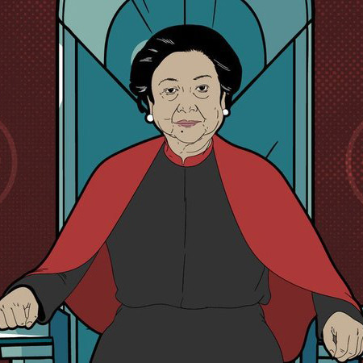

<!doctype html>
<html lang="en">
  <head>
    <meta charset="utf-8">
    <meta name="viewport" content="width=device-width, initial-scale=1">
    <title>Mahendra Project</title>

    <!-- Bootstrap css -->
    <link href="https://cdn.jsdelivr.net/npm/bootstrap@5.3.0-alpha1/dist/css/bootstrap.min.css" rel="stylesheet" integrity="sha384-GLhlTQ8iRABdZLl6O3oVMWSktQOp6b7In1Zl3/Jr59b6EGGoI1aFkw7cmDA6j6gD" crossorigin="anonymous">
    <!-- end Bootsrtap css -->
    
  <!-- Bootstrap Icon -->
  <link rel="stylesheet" href="https://cdn.jsdelivr.net/npm/bootstrap-icons@1.10.3/font/bootstrap-icons.css">
  <!-- end Bootstrap Icon -->

    <!-- css -->
<link rel="stylesheet" href="style.css">
    <!-- end css -->
  </head>
  <body>
    <script src="https://cdn.jsdelivr.net/npm/bootstrap@5.3.0-alpha1/dist/js/bootstrap.bundle.min.js" integrity="sha384-w76AqPfDkMBDXo30jS1Sgez6pr3x5MlQ1ZAGC+nuZB+EYdgRZgiwxhTBTkF7CXvN" crossorigin="anonymous"></script>
  </body>
</html
<body id="Home">
<!--Navbar-->
    <nav class="navbar navbar-expand-lg fixed-top" style="background-color:#FFB100;">
    <div class="container">
      <a class="navbar-brand" href="https://www.instagram.com/ary.mahendraa/"><b><i class="bi bi-file-earmark-music-fill"></i>Mahendra.id</b></a>
      <button class="navbar-toggler" type="button" data-bs-toggle="collapse" data-bs-target="#navbarNav" aria-controls="navbarNav" aria-expanded="false" aria-label="Toggle navigation">
        <span class="navbar-toggler-icon"></span>
      </button>
      <div class="collapse navbar-collapse" id="navbarNav">
        <ul class="navbar-nav ms-auto">
          <li class="nav-item">
            <a class="nav-link active" aria-current="page" href="#Home">Home</a>
          </li>
          <li class="nav-item">
            <a class="nav-link" href="#About">About</a>
          </li>
          <li class="nav-item">
            <a class="nav-link" href="#Profile">Profile</a>
          </li>
          <li class="nav-item">
            <a class="nav-link" href="#Contact">Contact</a>
          </li>
        </ul>
      </div>
    </div>
  </nav>
</body>
<!-- end Navbar -->

<!-- Jumbotron -->
<section id="Home" class="jumbotron text-center">
    
    <h1 class="display-4">Megawati Soekarnoputri</h1>
    <p class="lead">Former President of the Republic of Indonesia</p>
    <svg xmlns="http://www.w3.org/2000/svg" viewBox="0 0 1440 320"><path fill="#ffffff" fill-opacity="1" d="M0,224L60,208C120,192,240,160,360,165.3C480,171,600,213,720,218.7C840,224,960,192,1080,154.7C1200,117,1320,75,1380,53.3L1440,32L1440,320L1380,320C1320,320,1200,320,1080,320C960,320,840,320,720,320C600,320,480,320,360,320C240,320,120,320,60,320L0,320Z"></path></svg>
</section>
<!-- end Jumbutron -->

<!-- About -->
<section id="About" style="background-color: white;">
    <div class="container">
        <div class="row text-center mb-3">
            <div class="col">
                <h2>About</h2>
            </div>
        </div>
        <div class="row justify-content-center text-start">
            <div class="col-md-4">
                <p>Prof. Dr. (H.C.)[2] Hj. Diah Permata Megawati Setiawati Soekarnoputri (lahir 23 Januari 1947) adalah Presiden Indonesia yang kelima yang menjabat sejak 23 Juli 2001 sampai 20 Oktober 2004. Ia merupakan presiden wanita Indonesia pertama dan putri dari presiden Indonesia pertama, Soekarno, yang kemudian mengikuti jejak ayahnya menjadi Presiden Indonesia. Pada 20 September 2004, ia kalah suara dari Susilo Bambang Yudhoyono dalam Pemilu Presiden 2004 putaran yang kedua. Megawati lahir di Yogyakarta dari pasangan Soekarno dan Fatmawati. Megawati adalah anak kedua dan putri pertama Soekarno. 
                </p>
            </div>
            <div class="col-md-4">Dia dibesarkan di Istana Merdeka ayahnya. Dia menari untuk tamu ayahnya dan mengembangkan hobi berkebun. Megawati berusia 19 tahun ketika ayahnya melepaskan kekuasaan pada tahun 1966 dan digantikan oleh pemerintahan yang akhirnya dipimpin oleh Presiden Soeharto. Megawati kuliah di Universitas Padjajaran di Bandung untuk belajar pertanian tetapi keluar pada tahun 1967 untuk bersama ayahnya setelah kejatuhannya. Pada tahun 1970, tahun ayahnya meninggal, Megawati pergi ke Universitas Indonesia untuk belajar psikologi tetapi keluar setelah dua tahun.</div>
        </div>
    </div>
    <svg xmlns="http://www.w3.org/2000/svg" viewBox="0 0 1440 320"><path fill="#f0eccf" fill-opacity="1" d="M0,128L60,154.7C120,181,240,235,360,250.7C480,267,600,245,720,213.3C840,181,960,139,1080,128C1200,117,1320,139,1380,149.3L1440,160L1440,320L1380,320C1320,320,1200,320,1080,320C960,320,840,320,720,320C600,320,480,320,360,320C240,320,120,320,60,320L0,320Z"></path></svg>
 </section>
<!-- end About -->

<!--  Profile-->
<section id="Profile" style="background-color: #F0ECCF;">
    <div class="container">
        <div class="row text-center">"
            <div class="col mb-3">
                <h2>Profile</h2>
            </div>
        </div>
        <div class="row">
            <div class="col-md-4 mb-3">
                <div class="card">
                    
                    <div class="card-body">
                      <br class="card-text"><b>Memperbaiki Kinerja Ekspor</b><br>Pada 2002, nilai ekspor tercatat sebesar 57.158 miliar dollar AS dan impor sebesar 31.229 miliar dollar AS. Pada 2003, terjadi peningkatan ekspor, menjadi 61.02 miliar dollar AS dan 32.39 miliar dollar AS.</br></p>
                    </div>
                  </div>
            </div>
            <div class="col-md-4 mb-3">
                <div class="card">
                    
                    <div class="card-body">
                      <p class="card-text"><b>Menurunkan Garis Kemiskinan</b><br>Megawati fokus memperbaiki sistem perbankan dan ekonomi masyarakat umum. Tujuannya adalah untuk menyelamatkan perekonomian Indonesia serta inflasi yang terus meningkat. Usaha Megawati pun terbayar, karena perekonomian Indonesia kian lama kian stabil dan terus mengalami pertumbuhan ekonomi hingga mencapau 5 persen. Selain itu, Megawati juga berhasil menurunkan garis kemiskinan penduduk dari 28 persen menjadi 18 persen.</br></p>
                    </div>
                  </div>
            </div>
            <div class="col-md-4 mb-3">
                <div class="card">
                    
                    <div class="card-body">
                      <p class="card-text"><b>Mengakhiri Program Bersama IMF</b><br>Sebagai pemimpin negara, sudah menjadi tugas Megawati untuk menjaga keutuhan rakyat, baik secara sosial maupun ekonomi. Oleh sebab itu, Megawati menetapkan beberapa kebijakan, salah satunya yaitu dengan berani mengakhiri program reformasi kerja sama dengan International Monetary Fund (IMF) pada 2003.</br></p>
                    </div>
                  </div>
            </div>
        </div>
    </div>
    <svg xmlns="http://www.w3.org/2000/svg" viewBox="0 0 1440 320"><path fill="#ffffff" fill-opacity="1" d="M0,192L48,176C96,160,192,128,288,138.7C384,149,480,203,576,192C672,181,768,107,864,96C960,85,1056,139,1152,165.3C1248,192,1344,192,1392,192L1440,192L1440,320L1392,320C1344,320,1248,320,1152,320C1056,320,960,320,864,320C768,320,672,320,576,320C480,320,384,320,288,320C192,320,96,320,48,320L0,320Z"></path></svg>
</section>
<!-- end Profile -->

<!-- Contact -->
<section id="Contact">
  <div class="container">
    <div class="row text-center mb-3">
      <div class="col">
        <h2>Contact Us</h2>
      </div>
    </div>
    <div class="row">
      <div class="col-mid-8"></div>
      <form>
        <div class="mb-3">
          <label for="name" class="form-label">Name</label>
          <input type="text" class="form-control" id="name" aria-describedby="name">
        </div>
        <div class="mb-3">
          <label for="email" class="form-label">Email </label>
          <input type="email" class="form-control" id="email" aria-describedby="email">
        </div>
        <div class="mb-3">
          <label for="message" class="form-label">Message</label>
          <textarea class="form-control" id="Message" rows="3"></textarea>
        </div>
        <button type="submit" class="btn btn-primary">Submit</button>
      </form>
    </div>
  </div>
  <svg xmlns="http://www.w3.org/2000/svg" viewBox="0 0 1440 320"><path fill="#FFB100" fill-opacity="1" d="M0,96L48,112C96,128,192,160,288,170.7C384,181,480,171,576,165.3C672,160,768,160,864,165.3C960,171,1056,181,1152,176C1248,171,1344,149,1392,138.7L1440,128L1440,320L1392,320C1344,320,1248,320,1152,320C1056,320,960,320,864,320C768,320,672,320,576,320C480,320,384,320,288,320C192,320,96,320,48,320L0,320Z"></path></svg>
</section>
<!-- end Contact -->

<!-- Footer -->
<footer class="text-black text-center p-5" style="background-color: #FFB100;">
  <p> Created by <br><a href="https://www.instagram.com/ary.mahendraa/" class="text-black fw-bold">Ary Mahendra</a></p>
</footer>
<!-- end Footer -->

    <!-- Optional JavaScript; choose one of the two! -->

    <!-- Option 1: Bootstrap Bundle with Popper -->
    <script src="https://cdn.jsdelivr.net/npm/bootstrap@5.3.0-alpha1/dist/js/bootstrap.bundle.min.js" integrity="sha384-w76AqPfDkMBDXo30jS1Sgez6pr3x5MlQ1ZAGC+nuZB+EYdgRZgiwxhTBTkF7CXvN" crossorigin="anonymous"></script>
  </body>
</html>